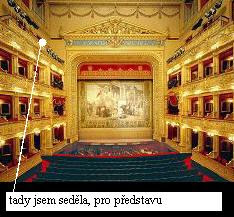
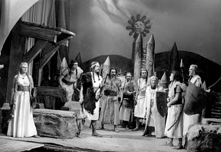
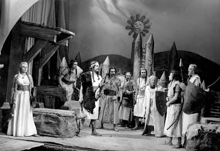
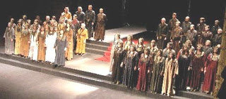
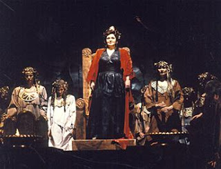
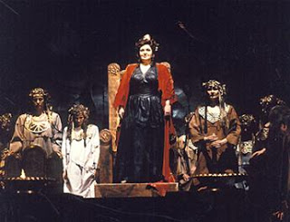

Sliby se maj plnit, nejen o Vánocích... takže jsme opět zde, abych podala report o našem druhém hudebnovědném výletu za kulturou. (musim si nějak ukrátit čekání na známku z estetiky, protože už mě chytají silné nervy)
Takže tentokráte jsme se vydali do Prahy do Národního divadla na Smetanovu Libuši, s Evou Urbanovou v hlavní roli (v roli Libuše :P).
Nebyl to sice tak vzrušující výlet, jako když jsme jeli do daleké ciziny, ale nevadí.
V Národním jsem byla vlastně poprvé na nějakém představení, předtím jsme jej prolézali jen v rámci exkurze. Samozřejmě "Zlatá kaplička" měla naprosto úžasnou atmosféru. My jsme obdrželi lístky na sedadla někde v I. galerii (asi 4. patro) na boku a řeknu vám, nejdřív se mi z té výšky dělalo trochu špatně a držela jsem se teda hódně při zdi, ale pak už jsem si zvykla.
Nebyl to sice tak vzrušující výlet, jako když jsme jeli do daleké ciziny, ale nevadí.
V Národním jsem byla vlastně poprvé na nějakém představení, předtím jsme jej prolézali jen v rámci exkurze. Samozřejmě "Zlatá kaplička" měla naprosto úžasnou atmosféru. My jsme obdrželi lístky na sedadla někde v I. galerii (asi 4. patro) na boku a řeknu vám, nejdřív se mi z té výšky dělalo trochu špatně a držela jsem se teda hódně při zdi, ale pak už jsem si zvykla.
Co říct o opeře samotné...
hodně náročná na soustředěnost, specielně některé dlouhatánské pasáže, trvá s přestávkami něco přes 3 hodiny...
já si teda libreto dopředu trochu nastudovala ve vlaku a dobře jsem udělala, nemusela jsem si pak moc lámat hlavu s tím, co se to tam vlastně děje, když není zpěvákům vůbec rozumět. Nakonec to jistily anglické a německé titulky pro zahraniční publikum. ;)
Opera to je ale bezesporu zajímavá, něco jako cesta do duše národního obrozence. Nenadarmo je to takyže česká národní opera, že. Ovšem v dnešní době jsou skutečně některé pasáže komické, například obraz ze života venkovského lidu a Přemyslova árie o obilí... :)) Mně osobně už to přišlo trochu jako parodie sebe sama.

hodně náročná na soustředěnost, specielně některé dlouhatánské pasáže, trvá s přestávkami něco přes 3 hodiny...
já si teda libreto dopředu trochu nastudovala ve vlaku a dobře jsem udělala, nemusela jsem si pak moc lámat hlavu s tím, co se to tam vlastně děje, když není zpěvákům vůbec rozumět. Nakonec to jistily anglické a německé titulky pro zahraniční publikum. ;)
Opera to je ale bezesporu zajímavá, něco jako cesta do duše národního obrozence. Nenadarmo je to takyže česká národní opera, že. Ovšem v dnešní době jsou skutečně některé pasáže komické, například obraz ze života venkovského lidu a Přemyslova árie o obilí... :)) Mně osobně už to přišlo trochu jako parodie sebe sama.

Pro představu jak to asi vypadalo tehdy...
... a jak dnes....


Eva Urbanová předvedla skvělý pěvecký výkon a zastínila bezpečně všechny kolegy a kolegyně. Režijně zpracované to bylo řekněme klasicky, neurazilo, ovšem ani nenadchlo, nebylo čím. Docela ale chápu, že s takovým počtem lidí na podiu se toho zas tolik dělat nedá, nicméně jsem byla přecijen trochu zklamaná, ani kostýmy mne nějak obzvlášť nenadchly. Víc k tomu asi nemám co říct, hlavně se mi nechce už, chytám pořádného nerva z té estetiky... :(
Takže zatím sbohem a kultuře zdar!
Váš Zuzik

Eva Urbanová předvedla skvělý pěvecký výkon a zastínila bezpečně všechny kolegy a kolegyně. Režijně zpracované to bylo řekněme klasicky, neurazilo, ovšem ani nenadchlo, nebylo čím. Docela ale chápu, že s takovým počtem lidí na podiu se toho zas tolik dělat nedá, nicméně jsem byla přecijen trochu zklamaná, ani kostýmy mne nějak obzvlášť nenadchly. Víc k tomu asi nemám co říct, hlavně se mi nechce už, chytám pořádného nerva z té estetiky... :(
Takže zatím sbohem a kultuře zdar!
Váš Zuzik